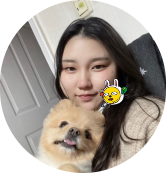

내 컴퓨터
안녕하세요! 창의적인 웹 디자인과 최신 프론트엔드 기술에 열정을 가진 강서연입니다. 전 고객들에게 최상의 사용자 경험을 제공하기 위해 웹 프론트엔드 개발에 열정을 가지고 있습니다. 사용자 인터페이스를 구축하고, 사용자들이 쉽게 상호작용할 수 있는 웹 애플리케이션을 만드는 것이 저의 주된 관심사입니다. 또한, 새로운 기술을 배우고 도전하는 것을 좋아하며, 팀과 협력하여 혁신적이고 효과적인 솔루션을 만드는 데 기여하고 싶습니다.
저는 고등학교 교육과정에서 코딩에 대한 기초 지식을 배웠고, 그것이 저에게 큰 흥미를 불러일으켰습니다. 코딩은 문제 해결과 창의적인 사고를 통해 웹 애플리케이션을 만들어내는 멋진 과정이라고 생각했습니다. 그러다가 전문적으로 코딩을 배울 수 있는 기회가 생겨 학원에 다니게 되었습니다. 학원에서 프론트엔드 개발에 대한 깊은 이해를 쌓을 수 있었습니다. HTML, CSS, JavaScript를 비롯한 웹 기술을 배우고, 실제 프로젝트를 통해 학습한 내용을 실전에서 적용해보는 경험을 할 수 있었습니다. 이러한 학원 수강을 통해 실제 작업 환경에서의 경험과 팀원들과의 협력의 중요성을 깨달았습니다. 문제가 발생했을 때 팀원들과 함께 해결책을 찾아가는 과정에서 실력과 커뮤니케이션 능력을 함께 키울 수 있었습니다. 또한, 새로운 기술과 도구에 대한 지속적인 학습과 열린 마인드를 가지고 있어야 프론트엔드 개발자로서 성장할 수 있다는 것을 깨달았습니다. 저는 새로운 기술과 도구에 대한 학습에 관심이 있으며, 문제를 해결하기 위해 노력하고 다른 팀원들과 함께 협력하여 성공적인 프로젝트를 완성해 나갈 것입니다. 프론트엔드 개발자로서의 역량을 갖추기 위해 더 많은 경험과 지식을 쌓아가며, 새로운 기술과 트렌드를 익히며 웹 애플리케이션을 개발하는 데에 열정을 쏟겠습니다. 사용자들에게 최상의 경험을 제공하는 웹 애플리케이션을 만들기 위해 노력하고, 지속적인 성장을 위해 노력할 것입니다.